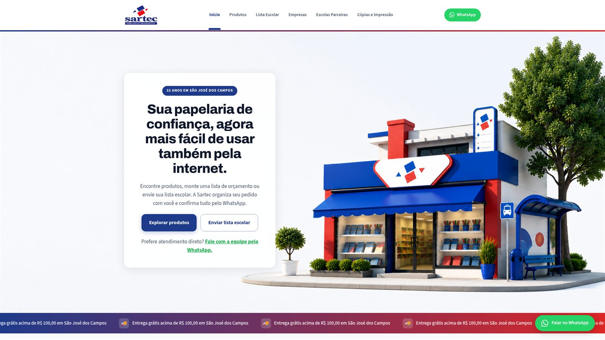
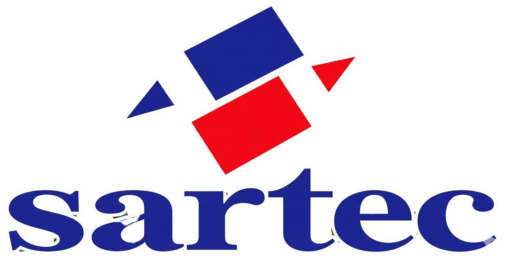

Sites e experiências web
Sites institucionais, landing pages, redesign, arquitetura da informação, UX/UI e direção visual — a porta de entrada feita para representar o porte da empresa.
 L A CABRAL
Tecnologia que organiza operações
L A CABRAL
Tecnologia que organiza operações
Entendemos como sua empresa funciona antes de decidir se a resposta é um redesign, um produto digital ou um sistema interno — e cuidamos da direção visual, da experiência e da implementação, do início ao fim.
Conversa direta com quem conduz a L A Cabral — sem formulário, sem intermediário.
Três territórios, um mesmo ponto de partida: entender o problema antes de escolher o formato.

Sites institucionais, landing pages, redesign, arquitetura da informação, UX/UI e direção visual — a porta de entrada feita para representar o porte da empresa.
Aplicativos, MVPs, protótipos e produtos digitais — do desenho da experiência à evolução de produtos que já existem.
Sistemas internos, dashboards, automações, integrações e IA aplicada — quando a operação pede uma solução própria.
De um redesign completo a um produto desenhado do zero — a L A Cabral parte do problema, não do formato da entrega.

Ecossistema em produçãoRedesenhamos o site, a jornada de listas escolares, o atendimento via WhatsApp, a triagem por IA e o painel interno — uma operação conectada, não páginas isoladas.
Protótipo navegável de um aplicativo educacional, com identidade própria e experiência mobile desenhada para uso real.
Antes de escolher entre um site, um produto ou um sistema, entendemos o que está custando tempo, venda ou clareza. Mapeamos como a empresa funciona, como os clientes chegam e como as informações circulam — e só depois decidimos o formato certo: pode ser um redesign, um produto novo, uma automação ou, quando a operação pede, um sistema próprio.
"A tecnologia é consequência do diagnóstico."
Alguns exemplos de quem já trabalha assim: clínicas, escolas, comércios com múltiplas unidades e escritórios em crescimento — mas o que define se faz sentido é o estágio da operação, não o setor.
Quatro fases, a partir do diagnóstico — não da ferramenta.
Pessoas, ferramentas, processos, gargalos e objetivos.
Definimos o que precisa mudar e qual é a solução mais simples para chegar lá.
Configuramos ferramentas existentes, integrações e automações — ou desenvolvemos software quando necessário.
Acompanhamos o uso, corrigimos gargalos e identificamos novas oportunidades.

Foi dentro da Sartec, em mais de 30 anos de operação, que Lucas Cabral formou o método que hoje aplica à frente da L A Cabral.
Conhecer a história completa →Vamos entender como sua empresa funciona hoje e onde tecnologia, automação ou software podem gerar o maior ganho.
Conversar sobre minha operaçãoSem compromisso · Uma conversa inicial para entender onde vale mais a pena organizar primeiro.